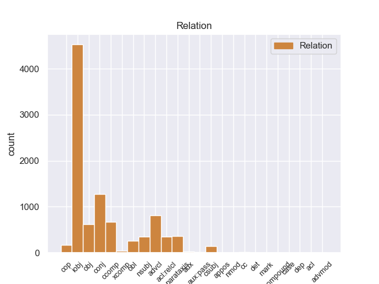
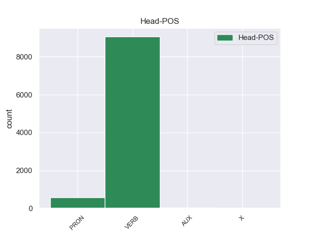
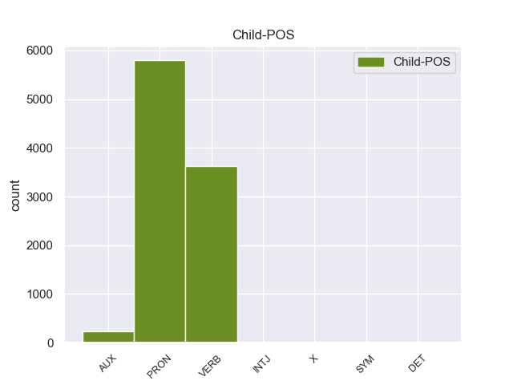

Distribution of features within this leaf



Agreement Rules sorted by frequency.
- When the dependent token is the indirect object(iobj) of the head token,
1 Su _ _ _ _ 0 _ _ _
2 última _ _ _ _ 0 _ _ _
3 etapa _ _ _ _ 0 _ _ _
4 como _ _ _ _ 0 _ _ _
5 realizador _ _ _ _ 0 _ _ _
6 se él PRON _ Case=Acc,Dat|Person=3|PrepCase=Npr|PronType=Prs|Reflex=Yes 7 iobj _ _
7 define definir VERB _ Mood=Ind|Number=Sing|Person=3|Tense=Pres|VerbForm=Fin 0 _ _ _
8 por _ _ _ _ 0 _ _ _
9 otro _ _ _ _ 0 _ _ _
10 reemplazo _ _ _ _ 0 _ _ _
11 en _ _ _ _ 0 _ _ _
12 pleno _ _ _ _ 0 _ _ _
13 rodaje _ _ _ _ 0 _ _ _
14 , _ _ _ _ 0 _ _ _
15 en _ _ _ _ 0 _ _ _
16 este _ _ _ _ 0 _ _ _
17 caso _ _ _ _ 0 _ _ _
18 de _ _ _ _ 0 _ _ _
19 " _ _ _ _ 0 _ _ _
20 El _ _ _ _ 0 _ _ _
21 último _ _ _ _ 0 _ _ _
22 adiós _ _ _ _ 0 _ _ _
23 de _ _ _ _ 0 _ _ _
24 la _ _ _ _ 0 _ _ _
25 sra _ _ _ _ 0 _ _ _
26 . _ _ _ _ 0 _ _ _
1 Situada _ _ _ _ 0 _ _ _
2 en _ _ _ _ 0 _ _ _
3 La _ _ _ _ 0 _ _ _
4 Mancha _ _ _ _ 0 _ _ _
5 toledana _ _ _ _ 0 _ _ _
6 en _ _ _ _ 0 _ _ _
7 un _ _ _ _ 0 _ _ _
8 enclave _ _ _ _ 0 _ _ _
9 estratégico _ _ _ _ 0 _ _ _
10 para _ _ _ _ 0 _ _ _
11 las _ _ _ _ 0 _ _ _
12 comunicaciones _ _ _ _ 0 _ _ _
13 ferroviarias _ _ _ _ 0 _ _ _
14 a _ _ _ _ 0 _ _ _
15 nivel _ _ _ _ 0 _ _ _
16 nacional _ _ _ _ 0 _ _ _
17 , _ _ _ _ 0 _ _ _
18 a _ _ _ _ 0 _ _ _
19 el _ _ _ _ 0 _ _ _
20 sur _ _ _ _ 0 _ _ _
21 de _ _ _ _ 0 _ _ _
22 Madrid _ _ _ _ 0 _ _ _
23 y _ _ _ _ 0 _ _ _
24 a _ _ _ _ 0 _ _ _
25 el _ _ _ _ 0 _ _ _
26 sudeste _ _ _ _ 0 _ _ _
27 de _ _ _ _ 0 _ _ _
28 Toledo _ _ _ _ 0 _ _ _
29 , _ _ _ _ 0 _ _ _
30 se _ _ _ _ 0 _ _ _
31 encuentra encontrar VERB _ Mood=Ind|Number=Sing|Person=3|Tense=Pres|VerbForm=Fin 0 _ _ _
32 en _ _ _ _ 0 _ _ _
33 el _ _ _ _ 0 _ _ _
34 Valle _ _ _ _ 0 _ _ _
35 de _ _ _ _ 0 _ _ _
36 el _ _ _ _ 0 _ _ _
37 rio _ _ _ _ 0 _ _ _
38 riánsares _ _ _ _ 0 _ _ _
39 a _ _ _ _ 0 _ _ _
40 los _ _ _ _ 0 _ _ _
41 pies _ _ _ _ 0 _ _ _
42 de _ _ _ _ 0 _ _ _
43 las _ _ _ _ 0 _ _ _
44 sierras _ _ _ _ 0 _ _ _
45 de _ _ _ _ 0 _ _ _
46 El _ _ _ _ 0 _ _ _
47 Romeral _ _ _ _ 0 _ _ _
48 y _ _ _ _ 0 _ _ _
49 parte _ _ _ _ 0 _ _ _
50 de _ _ _ _ 0 _ _ _
51 el _ _ _ _ 0 _ _ _
52 casco _ _ _ _ 0 _ _ _
53 urbano _ _ _ _ 0 _ _ _
54 se _ _ _ _ 0 _ _ _
55 encuentra encontrar VERB _ Mood=Ind|Number=Sing|Person=3|Tense=Pres|VerbForm=Fin 31 conj _ _
56 en _ _ _ _ 0 _ _ _
57 el _ _ _ _ 0 _ _ _
58 fondo _ _ _ _ 0 _ _ _
59 de _ _ _ _ 0 _ _ _
60 un _ _ _ _ 0 _ _ _
61 lago _ _ _ _ 0 _ _ _
62 seco _ _ _ _ 0 _ _ _
63 de _ _ _ _ 0 _ _ _
64 el _ _ _ _ 0 _ _ _
65 que _ _ _ _ 0 _ _ _
66 forma _ _ _ _ 0 _ _ _
67 parte _ _ _ _ 0 _ _ _
68 la _ _ _ _ 0 _ _ _
69 laguna _ _ _ _ 0 _ _ _
70 Larga _ _ _ _ 0 _ _ _
71 . _ _ _ _ 0 _ _ _
1 Es ser VERB _ Mood=Ind|Number=Sing|Person=3|Tense=Pres|VerbForm=Fin 0 _ _ _
2 así _ _ _ _ 0 _ _ _
3 como _ _ _ _ 0 _ _ _
4 descubrió descubrir VERB _ Mood=Ind|Number=Sing|Person=3|Tense=Past|VerbForm=Fin 1 advcl _ _
5 sus _ _ _ _ 0 _ _ _
6 dotes _ _ _ _ 0 _ _ _
7 para _ _ _ _ 0 _ _ _
8 la _ _ _ _ 0 _ _ _
9 pintura _ _ _ _ 0 _ _ _
10 comenzando _ _ _ _ 0 _ _ _
11 a _ _ _ _ 0 _ _ _
12 plasmar _ _ _ _ 0 _ _ _
13 sus _ _ _ _ 0 _ _ _
14 obras _ _ _ _ 0 _ _ _
15 en _ _ _ _ 0 _ _ _
16 óleo _ _ _ _ 0 _ _ _
17 sobre _ _ _ _ 0 _ _ _
18 lienzo _ _ _ _ 0 _ _ _
19 . _ _ _ _ 0 _ _ _
1 El _ _ _ _ 0 _ _ _
2 estudio _ _ _ _ 0 _ _ _
3 , _ _ _ _ 0 _ _ _
4 publicado _ _ _ _ 0 _ _ _
5 en _ _ _ _ 0 _ _ _
6 la _ _ _ _ 0 _ _ _
7 revista _ _ _ _ 0 _ _ _
8 Environmental _ _ _ _ 0 _ _ _
9 Health _ _ _ _ 0 _ _ _
10 Perspectives _ _ _ _ 0 _ _ _
11 , _ _ _ _ 0 _ _ _
12 precisó precisar VERB _ Mood=Ind|Number=Sing|Person=3|Tense=Past|VerbForm=Fin 0 _ _ _
13 que _ _ _ _ 0 _ _ _
14 el _ _ _ _ 0 _ _ _
15 herbicida _ _ _ _ 0 _ _ _
16 mata matar VERB _ Mood=Ind|Number=Sing|Person=3|Tense=Pres|VerbForm=Fin 12 ccomp _ _
17 una _ _ _ _ 0 _ _ _
18 gran _ _ _ _ 0 _ _ _
19 proporción _ _ _ _ 0 _ _ _
20 de _ _ _ _ 0 _ _ _
21 esas _ _ _ _ 0 _ _ _
22 células _ _ _ _ 0 _ _ _
23 después _ _ _ _ 0 _ _ _
24 de _ _ _ _ 0 _ _ _
25 sólo _ _ _ _ 0 _ _ _
26 dieciocho _ _ _ _ 0 _ _ _
27 horas _ _ _ _ 0 _ _ _
28 de _ _ _ _ 0 _ _ _
29 exposición _ _ _ _ 0 _ _ _
30 a _ _ _ _ 0 _ _ _
31 concentraciones _ _ _ _ 0 _ _ _
32 menores _ _ _ _ 0 _ _ _
33 que _ _ _ _ 0 _ _ _
34 las _ _ _ _ 0 _ _ _
35 utilizadas _ _ _ _ 0 _ _ _
36 en _ _ _ _ 0 _ _ _
37 el _ _ _ _ 0 _ _ _
38 uso _ _ _ _ 0 _ _ _
39 agrícola _ _ _ _ 0 _ _ _
40 . _ _ _ _ 0 _ _ _
1 Ayudemos _ _ _ _ 0 _ _ _
2 a _ _ _ _ 0 _ _ _
3 esta _ _ _ _ 0 _ _ _
4 intrépida _ _ _ _ 0 _ _ _
5 empresaria _ _ _ _ 0 _ _ _
6 , _ _ _ _ 0 _ _ _
7 tan _ _ _ _ 0 _ _ _
8 sobrada _ _ _ _ 0 _ _ _
9 de _ _ _ _ 0 _ _ _
10 clientes _ _ _ _ 0 _ _ _
11 que _ _ _ _ 0 _ _ _
12 incluso _ _ _ _ 0 _ _ _
13 le él PRON _ Case=Dat|Number=Sing|Person=3|PronType=Prs 14 obj _ _
14 molestan molestar VERB _ Mood=Ind|Number=Plur|Person=3|Tense=Pres|VerbForm=Fin 0 _ _ _
15 y _ _ _ _ 0 _ _ _
16 perturban _ _ _ _ 0 _ _ _
17 su _ _ _ _ 0 _ _ _
18 paz _ _ _ _ 0 _ _ _
19 . _ _ _ _ 0 _ _ _
1 En _ _ _ _ 0 _ _ _
2 este _ _ _ _ 0 _ _ _
3 momento _ _ _ _ 0 _ _ _
4 , _ _ _ _ 0 _ _ _
5 expuso exponer VERB _ Mood=Ind|Number=Sing|Person=3|Tense=Past|VerbForm=Fin 7 parataxis _ SpaceAfter=No
6 , _ _ _ _ 0 _ _ _
7 están estar VERB _ Mood=Ind|Number=Plur|Person=3|Tense=Pres|VerbForm=Fin 0 _ _ _
8 en _ _ _ _ 0 _ _ _
9 duda _ _ _ _ 0 _ _ _
10 las _ _ _ _ 0 _ _ _
11 ideas _ _ _ _ 0 _ _ _
12 conservadoras _ _ _ _ 0 _ _ _
13 que _ _ _ _ 0 _ _ _
14 se _ _ _ _ 0 _ _ _
15 han _ _ _ _ 0 _ _ _
16 aplicado _ _ _ _ 0 _ _ _
17 en _ _ _ _ 0 _ _ _
18 México _ _ _ _ 0 _ _ _
19 , _ _ _ _ 0 _ _ _
20 debido _ _ _ _ 0 _ _ _
21 a _ _ _ _ 0 _ _ _
22 los _ _ _ _ 0 _ _ _
23 resultados _ _ _ _ 0 _ _ _
24 económicos _ _ _ _ 0 _ _ _
25 y _ _ _ _ 0 _ _ _
26 los _ _ _ _ 0 _ _ _
27 abusos _ _ _ _ 0 _ _ _
28 de _ _ _ _ 0 _ _ _
29 intermediarios _ _ _ _ 0 _ _ _
30 financieros _ _ _ _ 0 _ _ _
31 . _ _ _ _ 0 _ _ _
1 Sabía _ _ _ _ 0 _ _ _
2 dónde _ _ _ _ 0 _ _ _
3 había _ _ _ _ 0 _ _ _
4 estado _ _ _ _ 0 _ _ _
5 y _ _ _ _ 0 _ _ _
6 dónde _ _ _ _ 0 _ _ _
7 estaba _ _ _ _ 0 _ _ _
8 , _ _ _ _ 0 _ _ _
9 a _ _ _ _ 0 _ _ _
10 mí _ _ _ _ 0 _ _ _
11 nunca _ _ _ _ 0 _ _ _
12 me _ _ _ _ 0 _ _ _
13 contó _ _ _ _ 0 _ _ _
14 detalles _ _ _ _ 0 _ _ _
15 de _ _ _ _ 0 _ _ _
16 lo _ _ _ _ 0 _ _ _
17 que _ _ _ _ 0 _ _ _
18 había _ _ _ _ 0 _ _ _
19 vivido _ _ _ _ 0 _ _ _
20 ahí _ _ _ _ 0 _ _ _
21 adentro _ _ _ _ 0 _ _ _
22 , _ _ _ _ 0 _ _ _
23 lo él PRON _ Case=Acc|Gender=Masc|Number=Sing|Person=3|PrepCase=Npr|PronType=Prs 0 _ _ _
24 que _ _ _ _ 0 _ _ _
25 sí _ _ _ _ 0 _ _ _
26 me _ _ _ _ 0 _ _ _
27 contó contar VERB _ Mood=Ind|Number=Sing|Person=3|Tense=Past|VerbForm=Fin 23 acl:relcl _ _
28 es _ _ _ _ 0 _ _ _
29 que _ _ _ _ 0 _ _ _
30 lo _ _ _ _ 0 _ _ _
31 habían _ _ _ _ 0 _ _ _
32 torturado _ _ _ _ 0 _ _ _
33 delante _ _ _ _ 0 _ _ _
34 de _ _ _ _ 0 _ _ _
35 su _ _ _ _ 0 _ _ _
36 madre _ _ _ _ 0 _ _ _
37 para _ _ _ _ 0 _ _ _
38 que _ _ _ _ 0 _ _ _
39 ella _ _ _ _ 0 _ _ _
40 diera _ _ _ _ 0 _ _ _
41 los _ _ _ _ 0 _ _ _
42 datos _ _ _ _ 0 _ _ _
43 de _ _ _ _ 0 _ _ _
44 una _ _ _ _ 0 _ _ _
45 hipoteca _ _ _ _ 0 _ _ _
46 o _ _ _ _ 0 _ _ _
47 de _ _ _ _ 0 _ _ _
48 una _ _ _ _ 0 _ _ _
49 casa _ _ _ _ 0 _ _ _
50 que _ _ _ _ 0 _ _ _
51 tenían _ _ _ _ 0 _ _ _
52 . _ _ _ _ 0 _ _ _
1 Ella _ _ _ _ 0 _ _ _
2 protestó _ _ _ _ 0 _ _ _
3 a _ _ _ _ 0 _ _ _
4 el _ _ _ _ 0 _ _ _
5 respecto _ _ _ _ 0 _ _ _
6 , _ _ _ _ 0 _ _ _
7 por _ _ _ _ 0 _ _ _
8 lo _ _ _ _ 0 _ _ _
9 que _ _ _ _ 0 _ _ _
10 un _ _ _ _ 0 _ _ _
11 ser _ _ _ _ 0 _ _ _
12 - _ _ _ _ 0 _ _ _
13 a _ _ _ _ 0 _ _ _
14 el _ _ _ _ 0 _ _ _
15 que _ _ _ _ 0 _ _ _
16 ella él PRON _ Case=Acc,Nom|Gender=Fem|Number=Sing|Person=3|PronType=Prs 18 nsubj _ _
17 posteriormente _ _ _ _ 0 _ _ _
18 comenzó comenzar VERB _ Mood=Ind|Number=Sing|Person=3|Tense=Past|VerbForm=Fin 0 _ _ _
19 a _ _ _ _ 0 _ _ _
20 llamar _ _ _ _ 0 _ _ _
21 " _ _ _ _ 0 _ _ _
22 el _ _ _ _ 0 _ _ _
23 líder _ _ _ _ 0 _ _ _
24 " _ _ _ _ 0 _ _ _
25 -- _ _ _ _ 0 _ _ _
26 le _ _ _ _ 0 _ _ _
27 dijo _ _ _ _ 0 _ _ _
28 que _ _ _ _ 0 _ _ _
29 si _ _ _ _ 0 _ _ _
30 Barney _ _ _ _ 0 _ _ _
31 y _ _ _ _ 0 _ _ _
32 ella _ _ _ _ 0 _ _ _
33 eran _ _ _ _ 0 _ _ _
34 examinados _ _ _ _ 0 _ _ _
35 juntos _ _ _ _ 0 _ _ _
36 tomaría _ _ _ _ 0 _ _ _
37 mucho _ _ _ _ 0 _ _ _
38 más _ _ _ _ 0 _ _ _
39 tiempo _ _ _ _ 0 _ _ _
40 realizar _ _ _ _ 0 _ _ _
41 las _ _ _ _ 0 _ _ _
42 pruebas _ _ _ _ 0 _ _ _
43 . _ _ _ _ 0 _ _ _
1 Afirma _ _ _ _ 0 _ _ _
2 que _ _ _ _ 0 _ _ _
3 las _ _ _ _ 0 _ _ _
4 superficies _ _ _ _ 0 _ _ _
5 comerciales _ _ _ _ 0 _ _ _
6 " _ _ _ _ 0 _ _ _
7 buscan _ _ _ _ 0 _ _ _
8 su _ _ _ _ 0 _ _ _
9 máximo _ _ _ _ 0 _ _ _
10 beneficio _ _ _ _ 0 _ _ _
11 , _ _ _ _ 0 _ _ _
12 presionan _ _ _ _ 0 _ _ _
13 excesivamente _ _ _ _ 0 _ _ _
14 a _ _ _ _ 0 _ _ _
15 el _ _ _ _ 0 _ _ _
16 pequeño _ _ _ _ 0 _ _ _
17 productor _ _ _ _ 0 _ _ _
18 , _ _ _ _ 0 _ _ _
19 acaban _ _ _ _ 0 _ _ _
20 con _ _ _ _ 0 _ _ _
21 el _ _ _ _ 0 _ _ _
22 comercio _ _ _ _ 0 _ _ _
23 local _ _ _ _ 0 _ _ _
24 y _ _ _ _ 0 _ _ _
25 transforman _ _ _ _ 0 _ _ _
26 negativamente _ _ _ _ 0 _ _ _
27 los _ _ _ _ 0 _ _ _
28 territorios _ _ _ _ 0 _ _ _
29 en _ _ _ _ 0 _ _ _
30 los _ _ _ _ 0 _ _ _
31 que _ _ _ _ 0 _ _ _
32 se _ _ _ _ 0 _ _ _
33 asientan _ _ _ _ 0 _ _ _
34 , _ _ _ _ 0 _ _ _
35 ya _ _ _ _ 0 _ _ _
36 que _ _ _ _ 0 _ _ _
37 se _ _ _ _ 0 _ _ _
38 pierden perder VERB _ Mood=Ind|Number=Plur|Person=3|Tense=Pres|VerbForm=Fin 0 _ _ _
39 en _ _ _ _ 0 _ _ _
40 ellos él PRON _ Case=Acc,Nom|Gender=Masc|Number=Plur|Person=3|PronType=Prs 38 obl _ _
41 las _ _ _ _ 0 _ _ _
42 relaciones _ _ _ _ 0 _ _ _
43 sociales _ _ _ _ 0 _ _ _
44 . _ _ _ _ 0 _ _ _
1 Sabía _ _ _ _ 0 _ _ _
2 dónde _ _ _ _ 0 _ _ _
3 había _ _ _ _ 0 _ _ _
4 estado _ _ _ _ 0 _ _ _
5 y _ _ _ _ 0 _ _ _
6 dónde _ _ _ _ 0 _ _ _
7 estaba _ _ _ _ 0 _ _ _
8 , _ _ _ _ 0 _ _ _
9 a _ _ _ _ 0 _ _ _
10 mí _ _ _ _ 0 _ _ _
11 nunca _ _ _ _ 0 _ _ _
12 me _ _ _ _ 0 _ _ _
13 contó _ _ _ _ 0 _ _ _
14 detalles _ _ _ _ 0 _ _ _
15 de _ _ _ _ 0 _ _ _
16 lo _ _ _ _ 0 _ _ _
17 que _ _ _ _ 0 _ _ _
18 había _ _ _ _ 0 _ _ _
19 vivido _ _ _ _ 0 _ _ _
20 ahí _ _ _ _ 0 _ _ _
21 adentro _ _ _ _ 0 _ _ _
22 , _ _ _ _ 0 _ _ _
23 lo él PRON _ Case=Acc|Gender=Masc|Number=Sing|Person=3|PrepCase=Npr|PronType=Prs 0 _ _ _
24 que _ _ _ _ 0 _ _ _
25 sí _ _ _ _ 0 _ _ _
26 me _ _ _ _ 0 _ _ _
27 contó _ _ _ _ 0 _ _ _
28 es ser AUX _ Mood=Ind|Number=Sing|Person=3|Tense=Pres|VerbForm=Fin 23 cop _ _
29 que _ _ _ _ 0 _ _ _
30 lo _ _ _ _ 0 _ _ _
31 habían _ _ _ _ 0 _ _ _
32 torturado _ _ _ _ 0 _ _ _
33 delante _ _ _ _ 0 _ _ _
34 de _ _ _ _ 0 _ _ _
35 su _ _ _ _ 0 _ _ _
36 madre _ _ _ _ 0 _ _ _
37 para _ _ _ _ 0 _ _ _
38 que _ _ _ _ 0 _ _ _
39 ella _ _ _ _ 0 _ _ _
40 diera _ _ _ _ 0 _ _ _
41 los _ _ _ _ 0 _ _ _
42 datos _ _ _ _ 0 _ _ _
43 de _ _ _ _ 0 _ _ _
44 una _ _ _ _ 0 _ _ _
45 hipoteca _ _ _ _ 0 _ _ _
46 o _ _ _ _ 0 _ _ _
47 de _ _ _ _ 0 _ _ _
48 una _ _ _ _ 0 _ _ _
49 casa _ _ _ _ 0 _ _ _
50 que _ _ _ _ 0 _ _ _
51 tenían _ _ _ _ 0 _ _ _
52 . _ _ _ _ 0 _ _ _
1 Si _ _ _ _ 0 _ _ _
2 uno _ _ _ _ 0 _ _ _
3 contesta _ _ _ _ 0 _ _ _
4 que _ _ _ _ 0 _ _ _
5 los _ _ _ _ 0 _ _ _
6 datos _ _ _ _ 0 _ _ _
7 y _ _ _ _ 0 _ _ _
8 la _ _ _ _ 0 _ _ _
9 experiencia _ _ _ _ 0 _ _ _
10 contradicen _ _ _ _ 0 _ _ _
11 su _ _ _ _ 0 _ _ _
12 opinión _ _ _ _ 0 _ _ _
13 , _ _ _ _ 0 _ _ _
14 le _ _ _ _ 0 _ _ _
15 llaman _ _ _ _ 0 _ _ _
16 políticamente _ _ _ _ 0 _ _ _
17 correcto _ _ _ _ 0 _ _ _
18 ( _ _ _ _ 0 _ _ _
19 y _ _ _ _ 0 _ _ _
20 , _ _ _ _ 0 _ _ _
21 por _ _ _ _ 0 _ _ _
22 supuesto _ _ _ _ 0 _ _ _
23 , _ _ _ _ 0 _ _ _
24 los _ _ _ _ 0 _ _ _
25 datos _ _ _ _ 0 _ _ _
26 y _ _ _ _ 0 _ _ _
27 la _ _ _ _ 0 _ _ _
28 experiencia _ _ _ _ 0 _ _ _
29 son _ _ _ _ 0 _ _ _
30 falsos _ _ _ _ 0 _ _ _
31 y _ _ _ _ 0 _ _ _
32 están _ _ _ _ 0 _ _ _
33 manipulados _ _ _ _ 0 _ _ _
34 por _ _ _ _ 0 _ _ _
35 los _ _ _ _ 0 _ _ _
36 progres _ _ _ _ 0 _ _ _
37 , _ _ _ _ 0 _ _ _
38 que _ _ _ _ 0 _ _ _
39 es ser VERB _ Mood=Ind|Number=Sing|Person=3|Tense=Pres|VerbForm=Fin 0 _ _ _
40 como _ _ _ _ 0 _ _ _
41 llaman llamar VERB _ Mood=Ind|Number=Plur|Person=3|Tense=Pres|VerbForm=Fin 39 csubj _ _
42 aquí _ _ _ _ 0 _ _ _
43 a _ _ _ _ 0 _ _ _
44 lo _ _ _ _ 0 _ _ _
45 que _ _ _ _ 0 _ _ _
46 en _ _ _ _ 0 _ _ _
47 EEUU _ _ _ _ 0 _ _ _
48 dicen _ _ _ _ 0 _ _ _
49 liberals _ _ _ _ 0 _ _ _
50 ) _ _ _ _ 0 _ _ _
51 . _ _ _ _ 0 _ _ _
1 En _ _ _ _ 0 _ _ _
2 997 _ _ _ _ 0 _ _ _
3 murió _ _ _ _ 0 _ _ _
4 el _ _ _ _ 0 _ _ _
5 emir _ _ _ _ 0 _ _ _
6 buyida _ _ _ _ 0 _ _ _
7 Fajar _ _ _ _ 0 _ _ _
8 ad _ _ _ _ 0 _ _ _
9 - _ _ _ _ 0 _ _ _
10 Dawla _ _ _ _ 0 _ _ _
11 Ali _ _ _ _ 0 _ _ _
12 , _ _ _ _ 0 _ _ _
13 lo _ _ _ _ 0 _ _ _
14 que _ _ _ _ 0 _ _ _
15 permitió permitir VERB _ Mood=Ind|Number=Sing|Person=3|Tense=Past|VerbForm=Fin 0 _ _ _
16 a _ _ _ _ 0 _ _ _
17 Baha _ _ _ _ 0 _ _ _
18 ad _ _ _ _ 0 _ _ _
19 - _ _ _ _ 0 _ _ _
20 Dawla _ _ _ _ 0 _ _ _
21 Firuz _ _ _ _ 0 _ _ _
22 reforzar reforzar VERB _ Mood=Ind|Number=Sing|Person=3|Tense=Pres|VerbForm=Fin 15 xcomp _ _
23 su _ _ _ _ 0 _ _ _
24 posición _ _ _ _ 0 _ _ _
25 en _ _ _ _ 0 _ _ _
26 Fars _ _ _ _ 0 _ _ _
27 . _ _ _ _ 0 _ _ _
1 El _ _ _ _ 0 _ _ _
2 Doctor _ _ _ _ 0 _ _ _
3 Boskonovitch _ _ _ _ 0 _ _ _
4 y _ _ _ _ 0 _ _ _
5 Yoshimitsu _ _ _ _ 0 _ _ _
6 están estar VERB _ Mood=Ind|Number=Plur|Person=3|Tense=Pres|VerbForm=Fin 0 _ _ _
7 en _ _ _ _ 0 _ _ _
8 los _ _ _ _ 0 _ _ _
9 laboratorios _ _ _ _ 0 _ _ _
10 de _ _ _ _ 0 _ _ _
11 el _ _ _ _ 0 _ _ _
12 primero _ _ _ _ 0 _ _ _
13 , _ _ _ _ 0 _ _ _
14 observan _ _ _ _ 0 _ _ _
15 a _ _ _ _ 0 _ _ _
16 un _ _ _ _ 0 _ _ _
17 ratón _ _ _ _ 0 _ _ _
18 que _ _ _ _ 0 _ _ _
19 está _ _ _ _ 0 _ _ _
20 bebiendo _ _ _ _ 0 _ _ _
21 la _ _ _ _ 0 _ _ _
22 sangre _ _ _ _ 0 _ _ _
23 de _ _ _ _ 0 _ _ _
24 Ogre _ _ _ _ 0 _ _ _
25 , _ _ _ _ 0 _ _ _
26 de _ _ _ _ 0 _ _ _
27 repente _ _ _ _ 0 _ _ _
28 los _ _ _ _ 0 _ _ _
29 dos _ _ _ _ 0 _ _ _
30 salen salir AUX _ Mood=Ind|Number=Plur|Person=3|Tense=Pres|VerbForm=Fin 6 aux _ _
31 corriendo _ _ _ _ 0 _ _ _
32 , _ _ _ _ 0 _ _ _
33 cuando _ _ _ _ 0 _ _ _
34 el _ _ _ _ 0 _ _ _
35 ratón _ _ _ _ 0 _ _ _
36 se _ _ _ _ 0 _ _ _
37 vuelve _ _ _ _ 0 _ _ _
38 gigante _ _ _ _ 0 _ _ _
39 y _ _ _ _ 0 _ _ _
40 destruye _ _ _ _ 0 _ _ _
41 el _ _ _ _ 0 _ _ _
42 laboratorio _ _ _ _ 0 _ _ _
43 . _ _ _ _ 0 _ _ _
1 Por _ _ _ _ 0 _ _ _
2 consiguiente _ _ _ _ 0 _ _ _
3 , _ _ _ _ 0 _ _ _
4 Comisión _ _ _ _ 0 _ _ _
5 fuerte _ _ _ _ 0 _ _ _
6 , _ _ _ _ 0 _ _ _
7 pero _ _ _ _ 0 _ _ _
8 que _ _ _ _ 0 _ _ _
9 se _ _ _ _ 0 _ _ _
10 apoye _ _ _ _ 0 _ _ _
11 en _ _ _ _ 0 _ _ _
12 un _ _ _ _ 0 _ _ _
13 Parlamento _ _ _ _ 0 _ _ _
14 , _ _ _ _ 0 _ _ _
15 y _ _ _ _ 0 _ _ _
16 el _ _ _ _ 0 _ _ _
17 Parlamento _ _ _ _ 0 _ _ _
18 es _ _ _ _ 0 _ _ _
19 por _ _ _ _ 0 _ _ _
20 tanto _ _ _ _ 0 _ _ _
21 su _ _ _ _ 0 _ _ _
22 aliado _ _ _ _ 0 _ _ _
23 , _ _ _ _ 0 _ _ _
24 pero _ _ _ _ 0 _ _ _
25 un _ _ _ _ 0 _ _ _
26 aliado _ _ _ _ 0 _ _ _
27 poco _ _ _ _ 0 _ _ _
28 cómodo _ _ _ _ 0 _ _ _
29 , _ _ _ _ 0 _ _ _
30 de _ _ _ _ 0 _ _ _
31 el _ _ _ _ 0 _ _ _
32 que _ _ _ _ 0 _ _ _
33 es ser AUX _ Mood=Ind|Number=Sing|Person=3|Tense=Pres|VerbForm=Fin 34 aux:pass _ _
34 preciso preciso VERB _ Mood=Ind|Number=Sing|Person=3|Tense=Past|VerbForm=Fin 0 _ _ _
35 oír _ _ _ _ 0 _ _ _
36 los _ _ _ _ 0 _ _ _
37 mensajes _ _ _ _ 0 _ _ _
38 , _ _ _ _ 0 _ _ _
39 y _ _ _ _ 0 _ _ _
40 yo _ _ _ _ 0 _ _ _
41 quisiera _ _ _ _ 0 _ _ _
42 dar _ _ _ _ 0 _ _ _
43 uno _ _ _ _ 0 _ _ _
44 o _ _ _ _ 0 _ _ _
45 dos _ _ _ _ 0 _ _ _
46 en _ _ _ _ 0 _ _ _
47 esta _ _ _ _ 0 _ _ _
48 breve _ _ _ _ 0 _ _ _
49 intervención _ _ _ _ 0 _ _ _
50 . _ _ _ _ 0 _ _ _
1 Aparte _ _ _ _ 0 _ _ _
2 de _ _ _ _ 0 _ _ _
3 lo _ _ _ _ 0 _ _ _
4 anterior _ _ _ _ 0 _ _ _
5 , _ _ _ _ 0 _ _ _
6 era _ _ _ _ 0 _ _ _
7 muy _ _ _ _ 0 _ _ _
8 frecuente _ _ _ _ 0 _ _ _
9 la _ _ _ _ 0 _ _ _
10 aparición _ _ _ _ 0 _ _ _
11 de _ _ _ _ 0 _ _ _
12 cobre _ _ _ _ 0 _ _ _
13 nativo _ _ _ _ 0 _ _ _
14 , _ _ _ _ 0 _ _ _
15 es ser VERB _ Mood=Ind|Number=Sing|Person=3|Tense=Pres|VerbForm=Fin 20 cc _ _
16 decir _ _ _ _ 0 _ _ _
17 , _ _ _ _ 0 _ _ _
18 que _ _ _ _ 0 _ _ _
19 se _ _ _ _ 0 _ _ _
20 encuentra encontrar VERB _ Mood=Ind|Number=Sing|Person=3|Tense=Pres|VerbForm=Fin 0 _ _ _
21 en _ _ _ _ 0 _ _ _
22 estado _ _ _ _ 0 _ _ _
23 metálico _ _ _ _ 0 _ _ _
24 natural _ _ _ _ 0 _ _ _
25 ; _ _ _ _ 0 _ _ _
1 La _ _ _ _ 0 _ _ _
2 FAI _ _ _ _ 0 _ _ _
3 inicialmente _ _ _ _ 0 _ _ _
4 no _ _ _ _ 0 _ _ _
5 reconoció reconocer VERB _ Mood=Ind|Number=Sing|Person=3|Tense=Past|VerbForm=Fin 0 _ _ _
6 el _ _ _ _ 0 _ _ _
7 logro _ _ _ _ 0 _ _ _
8 porque _ _ _ _ 0 _ _ _
9 no _ _ _ _ 0 _ _ _
10 fue ser VERB _ Mood=Ind|Number=Sing|Person=3|Tense=Past|VerbForm=Fin 5 mark _ _
11 en _ _ _ _ 0 _ _ _
12 la _ _ _ _ 0 _ _ _
13 Tierra _ _ _ _ 0 _ _ _
14 , _ _ _ _ 0 _ _ _
15 pero _ _ _ _ 0 _ _ _
16 más _ _ _ _ 0 _ _ _
17 tarde _ _ _ _ 0 _ _ _
18 reconoció _ _ _ _ 0 _ _ _
19 que _ _ _ _ 0 _ _ _
20 Gagarin _ _ _ _ 0 _ _ _
21 fue _ _ _ _ 0 _ _ _
22 el _ _ _ _ 0 _ _ _
23 primer _ _ _ _ 0 _ _ _
24 humano _ _ _ _ 0 _ _ _
25 en _ _ _ _ 0 _ _ _
26 volar _ _ _ _ 0 _ _ _
27 a _ _ _ _ 0 _ _ _
28 el _ _ _ _ 0 _ _ _
29 espacio _ _ _ _ 0 _ _ _
30 . _ _ _ _ 0 _ _ _
1 Es _ _ _ _ 0 _ _ _
2 la _ _ _ _ 0 _ _ _
3 muerte _ _ _ _ 0 _ _ _
4 de _ _ _ _ 0 _ _ _
5 el _ _ _ _ 0 _ _ _
6 bien _ _ _ _ 0 _ _ _
7 común _ _ _ _ 0 _ _ _
8 y _ _ _ _ 0 _ _ _
9 , _ _ _ _ 0 _ _ _
10 más _ _ _ _ 0 _ _ _
11 allá _ _ _ _ 0 _ _ _
12 , _ _ _ _ 0 _ _ _
13 de _ _ _ _ 0 _ _ _
14 el _ _ _ _ 0 _ _ _
15 sentido _ _ _ _ 0 _ _ _
16 mismo _ _ _ _ 0 _ _ _
17 de _ _ _ _ 0 _ _ _
18 la _ _ _ _ 0 _ _ _
19 vida _ _ _ _ 0 _ _ _
20 lo él PRON _ Case=Acc|Gender=Masc|Number=Sing|Person=3|PrepCase=Npr|PronType=Prs 0 _ _ _
21 que _ _ _ _ 0 _ _ _
22 nos _ _ _ _ 0 _ _ _
23 proponen _ _ _ _ 0 _ _ _
24 , _ _ _ _ 0 _ _ _
25 ellos él PRON _ Case=Acc,Nom|Gender=Masc|Number=Plur|Person=3|PronType=Prs 20 appos _ SpaceAfter=No
26 , _ _ _ _ 0 _ _ _
27 que _ _ _ _ 0 _ _ _
28 , _ _ _ _ 0 _ _ _
29 a _ _ _ _ 0 _ _ _
30 el _ _ _ _ 0 _ _ _
31 ocupar _ _ _ _ 0 _ _ _
32 se _ _ _ _ 0 _ _ _
33 únicamente _ _ _ _ 0 _ _ _
34 de _ _ _ _ 0 _ _ _
35 los _ _ _ _ 0 _ _ _
36 derechos _ _ _ _ 0 _ _ _
37 humanos _ _ _ _ 0 _ _ _
38 , _ _ _ _ 0 _ _ _
39 han _ _ _ _ 0 _ _ _
40 olvidado _ _ _ _ 0 _ _ _
41 lo _ _ _ _ 0 _ _ _
42 que _ _ _ _ 0 _ _ _
43 es _ _ _ _ 0 _ _ _
44 ante _ _ _ _ 0 _ _ _
45 todo _ _ _ _ 0 _ _ _
46 el _ _ _ _ 0 _ _ _
47 hombre _ _ _ _ 0 _ _ _
48 y _ _ _ _ 0 _ _ _
49 cuáles _ _ _ _ 0 _ _ _
50 son _ _ _ _ 0 _ _ _
51 sus _ _ _ _ 0 _ _ _
52 raíces _ _ _ _ 0 _ _ _
53 y _ _ _ _ 0 _ _ _
54 sus _ _ _ _ 0 _ _ _
55 aspiraciones _ _ _ _ 0 _ _ _
56 . _ _ _ _ 0 _ _ _
1 En _ _ _ _ 0 _ _ _
2 la _ _ _ _ 0 _ _ _
3 provincia _ _ _ _ 0 _ _ _
4 vecina _ _ _ _ 0 _ _ _
5 vivía _ _ _ _ 0 _ _ _
6 con _ _ _ _ 0 _ _ _
7 tres _ _ _ _ 0 _ _ _
8 amigas _ _ _ _ 0 _ _ _
9 y _ _ _ _ 0 _ _ _
10 se _ _ _ _ 0 _ _ _
11 comunicaba _ _ _ _ 0 _ _ _
12 cada _ _ _ _ 0 _ _ _
13 tanto _ _ _ _ 0 _ _ _
14 con _ _ _ _ 0 _ _ _
15 su _ _ _ _ 0 _ _ _
16 familia _ _ _ _ 0 _ _ _
17 , _ _ _ _ 0 _ _ _
18 pero _ _ _ _ 0 _ _ _
19 ellos él PRON _ Case=Acc,Nom|Gender=Masc|Number=Plur|Person=3|PronType=Prs 0 _ _ _
20 con _ _ _ _ 0 _ _ _
21 ella él PRON _ Case=Acc,Nom|Gender=Fem|Number=Sing|Person=3|PronType=Prs 19 nmod _ _
22 no _ _ _ _ 0 _ _ _
23 , _ _ _ _ 0 _ _ _
24 porque _ _ _ _ 0 _ _ _
25 la _ _ _ _ 0 _ _ _
26 joven _ _ _ _ 0 _ _ _
27 prefirió _ _ _ _ 0 _ _ _
28 no _ _ _ _ 0 _ _ _
29 exponer _ _ _ _ 0 _ _ _
30 a _ _ _ _ 0 _ _ _
31 sus _ _ _ _ 0 _ _ _
32 cercanos _ _ _ _ 0 _ _ _
33 . _ _ _ _ 0 _ _ _
1 Los _ _ _ _ 0 _ _ _
2 altos _ _ _ _ 0 _ _ _
3 cargos _ _ _ _ 0 _ _ _
4 imperiales _ _ _ _ 0 _ _ _
5 procedían _ _ _ _ 0 _ _ _
6 de _ _ _ _ 0 _ _ _
7 Oriente _ _ _ _ 0 _ _ _
8 , _ _ _ _ 0 _ _ _
9 como _ _ _ _ 0 _ _ _
10 Ioul _ _ _ _ 0 _ _ _
11 o _ _ _ _ 0 _ _ _
12 Silvanos _ _ _ _ 0 _ _ _
13 Melanion _ _ _ _ 0 _ _ _
14 y _ _ _ _ 0 _ _ _
15 traían traer VERB _ Mood=Ind|Number=Plur|Person=3|Tense=Imp|VerbForm=Fin 0 _ _ _
16 consigo él PRON _ Case=Com|Person=3|PronType=Prs|Reflex=Yes 15 case _ _
17 una _ _ _ _ 0 _ _ _
18 religión _ _ _ _ 0 _ _ _
19 importada _ _ _ _ 0 _ _ _
20 con _ _ _ _ 0 _ _ _
21 sus _ _ _ _ 0 _ _ _
22 dioses _ _ _ _ 0 _ _ _
23 ; _ _ _ _ 0 _ _ _
1 Es _ _ _ _ 0 _ _ _
2 probablemente _ _ _ _ 0 _ _ _
3 cazada _ _ _ _ 0 _ _ _
4 donde _ _ _ _ 0 _ _ _
5 sea ser AUX _ Mood=Sub|Number=Sing|Person=3|Tense=Pres|VerbForm=Fin 6 dep _ _
6 haya haber VERB _ Mood=Sub|Number=Sing|Person=3|Tense=Pres|VerbForm=Fin 0 _ _ _
7 humanos _ _ _ _ 0 _ _ _
8 . _ _ _ _ 0 _ _ _
1 El _ _ _ _ 0 _ _ _
2 artista _ _ _ _ 0 _ _ _
3 que _ _ _ _ 0 _ _ _
4 es _ _ _ _ 0 _ _ _
5 conocido _ _ _ _ 0 _ _ _
6 transversalmente _ _ _ _ 0 _ _ _
7 como _ _ _ _ 0 _ _ _
8 " _ _ _ _ 0 _ _ _
9 Pollo _ _ _ _ 0 _ _ _
10 " _ _ _ _ 0 _ _ _
11 Fuentes _ _ _ _ 0 _ _ _
12 , _ _ _ _ 0 _ _ _
13 desde _ _ _ _ 0 _ _ _
14 aquellos _ _ _ _ 0 _ _ _
15 años _ _ _ _ 0 _ _ _
16 de _ _ _ _ 0 _ _ _
17 la _ _ _ _ 0 _ _ _
18 década _ _ _ _ 0 _ _ _
19 de _ _ _ _ 0 _ _ _
20 sesenta _ _ _ _ 0 _ _ _
21 cuando _ _ _ _ 0 _ _ _
22 se _ _ _ _ 0 _ _ _
23 iniciaba _ _ _ _ 0 _ _ _
24 tímidamente _ _ _ _ 0 _ _ _
25 su _ _ _ _ 0 _ _ _
26 carrera _ _ _ _ 0 _ _ _
27 musical _ _ _ _ 0 _ _ _
28 , _ _ _ _ 0 _ _ _
29 logró _ _ _ _ 0 _ _ _
30 poner _ _ _ _ 0 _ _ _
31 sello _ _ _ _ 0 _ _ _
32 y _ _ _ _ 0 _ _ _
33 calor _ _ _ _ 0 _ _ _
34 a _ _ _ _ 0 _ _ _
35 la _ _ _ _ 0 _ _ _
36 tarde _ _ _ _ 0 _ _ _
37 sabatina _ _ _ _ 0 _ _ _
38 y _ _ _ _ 0 _ _ _
39 hacer _ _ _ _ 0 _ _ _
40 lo él PRON _ Case=Acc|Gender=Masc|Number=Sing|Person=3|PrepCase=Npr|PronType=Prs 41 det _ _
41 suyo suyo PRON _ Gender=Masc|Number=Sing|Person=3|Poss=Yes|PronType=Prs 0 _ _ _
42 con _ _ _ _ 0 _ _ _
43 maestría _ _ _ _ 0 _ _ _
44 sobre _ _ _ _ 0 _ _ _
45 el _ _ _ _ 0 _ _ _
46 escenario _ _ _ _ 0 _ _ _
47 . _ _ _ _ 0 _ _ _
1 Zurbarán _ _ _ _ 0 _ _ _
2 testificó _ _ _ _ 0 _ _ _
3 durante _ _ _ _ 0 _ _ _
4 la _ _ _ _ 0 _ _ _
5 investigación _ _ _ _ 0 _ _ _
6 llevada _ _ _ _ 0 _ _ _
7 a _ _ _ _ 0 _ _ _
8 cabo _ _ _ _ 0 _ _ _
9 sobre _ _ _ _ 0 _ _ _
10 Velázquez _ _ _ _ 0 _ _ _
11 , _ _ _ _ 0 _ _ _
12 lo _ _ _ _ 0 _ _ _
13 que _ _ _ _ 0 _ _ _
14 le _ _ _ _ 0 _ _ _
15 permitió _ _ _ _ 0 _ _ _
16 ingresar _ _ _ _ 0 _ _ _
17 en _ _ _ _ 0 _ _ _
18 la _ _ _ _ 0 _ _ _
19 Orden _ _ _ _ 0 _ _ _
20 de _ _ _ _ 0 _ _ _
21 Santiago _ _ _ _ 0 _ _ _
22 como _ _ _ _ 0 _ _ _
23 él él PRON _ Case=Acc,Nom|Gender=Masc|Number=Sing|Person=3|PronType=Prs 0 _ _ _
24 deseaba desear VERB _ Mood=Ind|Number=Sing|Person=3|Tense=Imp|VerbForm=Fin 23 acl _ SpaceAfter=No
25 . _ _ _ _ 0 _ _ _
1 Ella él PRON _ Case=Acc,Nom|Gender=Fem|Number=Sing|Person=3|PronType=Prs 2 advmod _ _
2 protestó protestar VERB _ Mood=Ind|Number=Sing|Person=3|Tense=Past|VerbForm=Fin 0 _ _ _
3 a _ _ _ _ 0 _ _ _
4 el _ _ _ _ 0 _ _ _
5 respecto _ _ _ _ 0 _ _ _
6 , _ _ _ _ 0 _ _ _
7 por _ _ _ _ 0 _ _ _
8 lo _ _ _ _ 0 _ _ _
9 que _ _ _ _ 0 _ _ _
10 un _ _ _ _ 0 _ _ _
11 ser _ _ _ _ 0 _ _ _
12 - _ _ _ _ 0 _ _ _
13 a _ _ _ _ 0 _ _ _
14 el _ _ _ _ 0 _ _ _
15 que _ _ _ _ 0 _ _ _
16 ella _ _ _ _ 0 _ _ _
17 posteriormente _ _ _ _ 0 _ _ _
18 comenzó _ _ _ _ 0 _ _ _
19 a _ _ _ _ 0 _ _ _
20 llamar _ _ _ _ 0 _ _ _
21 " _ _ _ _ 0 _ _ _
22 el _ _ _ _ 0 _ _ _
23 líder _ _ _ _ 0 _ _ _
24 " _ _ _ _ 0 _ _ _
25 -- _ _ _ _ 0 _ _ _
26 le _ _ _ _ 0 _ _ _
27 dijo _ _ _ _ 0 _ _ _
28 que _ _ _ _ 0 _ _ _
29 si _ _ _ _ 0 _ _ _
30 Barney _ _ _ _ 0 _ _ _
31 y _ _ _ _ 0 _ _ _
32 ella _ _ _ _ 0 _ _ _
33 eran _ _ _ _ 0 _ _ _
34 examinados _ _ _ _ 0 _ _ _
35 juntos _ _ _ _ 0 _ _ _
36 tomaría _ _ _ _ 0 _ _ _
37 mucho _ _ _ _ 0 _ _ _
38 más _ _ _ _ 0 _ _ _
39 tiempo _ _ _ _ 0 _ _ _
40 realizar _ _ _ _ 0 _ _ _
41 las _ _ _ _ 0 _ _ _
42 pruebas _ _ _ _ 0 _ _ _
43 . _ _ _ _ 0 _ _ _
Disagree Examples:
1 Lo _ _ _ _ 0 _ _ _
2 acojo _ _ _ _ 0 _ _ _
3 con _ _ _ _ 0 _ _ _
4 la _ _ _ _ 0 _ _ _
5 mayor _ _ _ _ 0 _ _ _
6 satisfacción _ _ _ _ 0 _ _ _
7 , _ _ _ _ 0 _ _ _
8 pero _ _ _ _ 0 _ _ _
9 también _ _ _ _ 0 _ _ _
10 me yo PRON _ Case=Acc,Dat|Number=Sing|Person=1|PrepCase=Npr|PronType=Prs 11 iobj _ _
11 gustaría gustar VERB _ Mood=Cnd|Number=Sing|Person=3|VerbForm=Fin 0 _ _ _
12 que _ _ _ _ 0 _ _ _
13 en _ _ _ _ 0 _ _ _
14 todos _ _ _ _ 0 _ _ _
15 los _ _ _ _ 0 _ _ _
16 informes _ _ _ _ 0 _ _ _
17 y _ _ _ _ 0 _ _ _
18 comunicaciones _ _ _ _ 0 _ _ _
19 de _ _ _ _ 0 _ _ _
20 la _ _ _ _ 0 _ _ _
21 Comisión _ _ _ _ 0 _ _ _
22 se _ _ _ _ 0 _ _ _
23 tuviera _ _ _ _ 0 _ _ _
24 en _ _ _ _ 0 _ _ _
25 cuenta _ _ _ _ 0 _ _ _
26 automáticamente _ _ _ _ 0 _ _ _
27 el _ _ _ _ 0 _ _ _
28 medio _ _ _ _ 0 _ _ _
29 ambiente _ _ _ _ 0 _ _ _
30 . _ _ _ _ 0 _ _ _
1 Ahora _ _ _ _ 0 _ _ _
2 bien _ _ _ _ 0 _ _ _
3 , _ _ _ _ 0 _ _ _
4 presumo _ _ _ _ 0 _ _ _
5 que _ _ _ _ 0 _ _ _
6 ese _ _ _ _ 0 _ _ _
7 asunto _ _ _ _ 0 _ _ _
8 no _ _ _ _ 0 _ _ _
9 es _ _ _ _ 0 _ _ _
10 demasiado _ _ _ _ 0 _ _ _
11 polémico _ _ _ _ 0 _ _ _
12 y _ _ _ _ 0 _ _ _
13 nos yo PRON _ Case=Acc,Dat|Number=Plur|Person=1|PrepCase=Npr|PronType=Prs 14 iobj _ _
14 parece parecer VERB _ Mood=Ind|Number=Sing|Person=3|Tense=Pres|VerbForm=Fin 0 _ _ _
15 que _ _ _ _ 0 _ _ _
16 constará _ _ _ _ 0 _ _ _
17 tan _ _ _ _ 0 _ _ _
18 sólo _ _ _ _ 0 _ _ _
19 de _ _ _ _ 0 _ _ _
20 una _ _ _ _ 0 _ _ _
21 recopilación _ _ _ _ 0 _ _ _
22 de _ _ _ _ 0 _ _ _
23 lo _ _ _ _ 0 _ _ _
24 que _ _ _ _ 0 _ _ _
25 hoy _ _ _ _ 0 _ _ _
26 es _ _ _ _ 0 _ _ _
27 un _ _ _ _ 0 _ _ _
28 cuerpo _ _ _ _ 0 _ _ _
29 consensual _ _ _ _ 0 _ _ _
30 de _ _ _ _ 0 _ _ _
31 derechos _ _ _ _ 0 _ _ _
32 y _ _ _ _ 0 _ _ _
33 nos _ _ _ _ 0 _ _ _
34 parece _ _ _ _ 0 _ _ _
35 de _ _ _ _ 0 _ _ _
36 la _ _ _ _ 0 _ _ _
37 más _ _ _ _ 0 _ _ _
38 elemental _ _ _ _ 0 _ _ _
39 justicia _ _ _ _ 0 _ _ _
40 que _ _ _ _ 0 _ _ _
41 se _ _ _ _ 0 _ _ _
42 incluyan _ _ _ _ 0 _ _ _
43 en _ _ _ _ 0 _ _ _
44 la _ _ _ _ 0 _ _ _
45 Carta _ _ _ _ 0 _ _ _
46 y _ _ _ _ 0 _ _ _
47 los _ _ _ _ 0 _ _ _
48 comparta _ _ _ _ 0 _ _ _
49 la _ _ _ _ 0 _ _ _
50 Unión _ _ _ _ 0 _ _ _
51 . _ _ _ _ 0 _ _ _
1 Ahora _ _ _ _ 0 _ _ _
2 bien _ _ _ _ 0 _ _ _
3 , _ _ _ _ 0 _ _ _
4 presumo _ _ _ _ 0 _ _ _
5 que _ _ _ _ 0 _ _ _
6 ese _ _ _ _ 0 _ _ _
7 asunto _ _ _ _ 0 _ _ _
8 no _ _ _ _ 0 _ _ _
9 es _ _ _ _ 0 _ _ _
10 demasiado _ _ _ _ 0 _ _ _
11 polémico _ _ _ _ 0 _ _ _
12 y _ _ _ _ 0 _ _ _
13 nos _ _ _ _ 0 _ _ _
14 parece _ _ _ _ 0 _ _ _
15 que _ _ _ _ 0 _ _ _
16 constará _ _ _ _ 0 _ _ _
17 tan _ _ _ _ 0 _ _ _
18 sólo _ _ _ _ 0 _ _ _
19 de _ _ _ _ 0 _ _ _
20 una _ _ _ _ 0 _ _ _
21 recopilación _ _ _ _ 0 _ _ _
22 de _ _ _ _ 0 _ _ _
23 lo _ _ _ _ 0 _ _ _
24 que _ _ _ _ 0 _ _ _
25 hoy _ _ _ _ 0 _ _ _
26 es _ _ _ _ 0 _ _ _
27 un _ _ _ _ 0 _ _ _
28 cuerpo _ _ _ _ 0 _ _ _
29 consensual _ _ _ _ 0 _ _ _
30 de _ _ _ _ 0 _ _ _
31 derechos _ _ _ _ 0 _ _ _
32 y _ _ _ _ 0 _ _ _
33 nos yo PRON _ Case=Acc,Dat|Number=Plur|Person=1|PrepCase=Npr|PronType=Prs 34 iobj _ _
34 parece parecer VERB _ Mood=Ind|Number=Sing|Person=3|Tense=Pres|VerbForm=Fin 0 _ _ _
35 de _ _ _ _ 0 _ _ _
36 la _ _ _ _ 0 _ _ _
37 más _ _ _ _ 0 _ _ _
38 elemental _ _ _ _ 0 _ _ _
39 justicia _ _ _ _ 0 _ _ _
40 que _ _ _ _ 0 _ _ _
41 se _ _ _ _ 0 _ _ _
42 incluyan _ _ _ _ 0 _ _ _
43 en _ _ _ _ 0 _ _ _
44 la _ _ _ _ 0 _ _ _
45 Carta _ _ _ _ 0 _ _ _
46 y _ _ _ _ 0 _ _ _
47 los _ _ _ _ 0 _ _ _
48 comparta _ _ _ _ 0 _ _ _
49 la _ _ _ _ 0 _ _ _
50 Unión _ _ _ _ 0 _ _ _
51 . _ _ _ _ 0 _ _ _
1 Existen _ _ _ _ 0 _ _ _
2 expertos _ _ _ _ 0 _ _ _
3 que _ _ _ _ 0 _ _ _
4 nos yo PRON _ Case=Acc,Dat|Number=Plur|Person=1|PrepCase=Npr|PronType=Prs 5 iobj _ _
5 aconsejan aconsejar VERB _ Mood=Sub|Number=Plur|Person=3|Tense=Pres|VerbForm=Fin 0 _ _ _
6 que _ _ _ _ 0 _ _ _
7 deberíamos _ _ _ _ 0 _ _ _
8 intentar _ _ _ _ 0 _ _ _
9 lograr _ _ _ _ 0 _ _ _
10 una _ _ _ _ 0 _ _ _
11 estabilización _ _ _ _ 0 _ _ _
12 en _ _ _ _ 0 _ _ _
13 las _ _ _ _ 0 _ _ _
14 emisiones _ _ _ _ 0 _ _ _
15 actuales _ _ _ _ 0 _ _ _
16 . _ _ _ _ 0 _ _ _
1 Existen _ _ _ _ 0 _ _ _
2 expertos _ _ _ _ 0 _ _ _
3 que _ _ _ _ 0 _ _ _
4 nos _ _ _ _ 0 _ _ _
5 aconsejan aconsejar VERB _ Mood=Sub|Number=Plur|Person=3|Tense=Pres|VerbForm=Fin 0 _ _ _
6 que _ _ _ _ 0 _ _ _
7 deberíamos deberíar VERB _ Mood=Ind|Number=Plur|Person=1|Tense=Pres|VerbForm=Fin 5 ccomp _ _
8 intentar _ _ _ _ 0 _ _ _
9 lograr _ _ _ _ 0 _ _ _
10 una _ _ _ _ 0 _ _ _
11 estabilización _ _ _ _ 0 _ _ _
12 en _ _ _ _ 0 _ _ _
13 las _ _ _ _ 0 _ _ _
14 emisiones _ _ _ _ 0 _ _ _
15 actuales _ _ _ _ 0 _ _ _
16 . _ _ _ _ 0 _ _ _